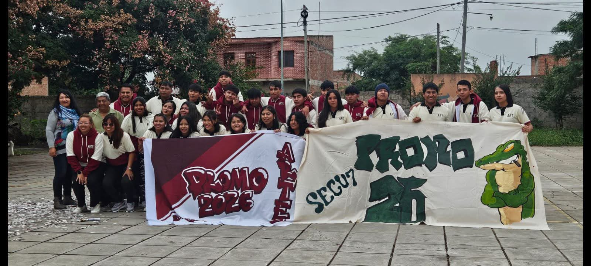
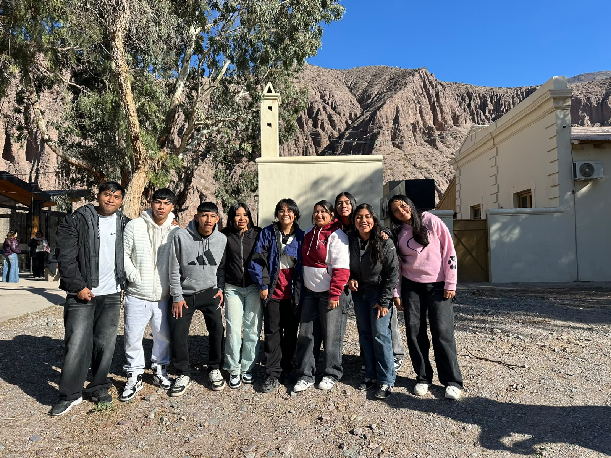
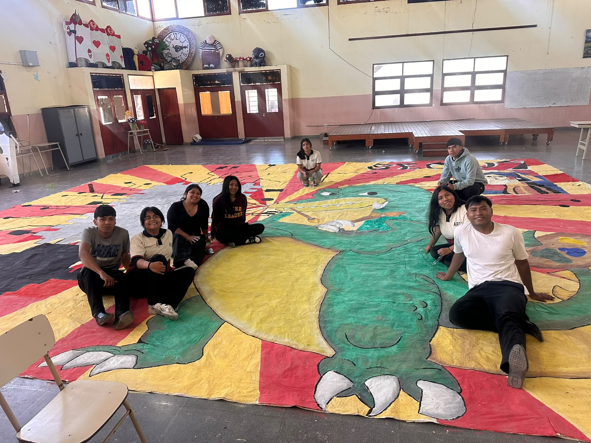

5°1 especializados en arte
Cantidad de Alumnos
Cantidad total de alumnos: 26
Foto Grupal
Sobre el Curso
5° Primera es un curso conformado por estudiantes comprometidos y unidos, que a lo largo de los años transitados juntos han construido un fuerte sentido de compañerismo. El grupo se caracteriza por el respeto mutuo y la colaboración constante entre sus integrantes, tanto dentro como fuera del aula.

El 5° 1° del turno mañana se caracteriza por su creatividad y por las ganas de participar en nuevas experiencias. El arte ocupa un lugar especial, ya que nos permite expresarnos de diferentes maneras: dibujando, pintando, creando, diseñando y trabajando en equipo. Además, realizamos actividades y proyectos que nos permiten descubrir nuestras habilidades, compartir ideas y aprender de nuestros compañeros. Cada producción tiene algo de nosotros y representa el esfuerzo y la dedicación que ponemos en cada propuesta.

En 5° 1° del turno mañana compartimos mucho más que clases. Somos un grupo que busca aprender, crear y disfrutar cada experiencia. A través del arte, los proyectos y las actividades escolares tenemos la oportunidad de expresar nuestras ideas y mostrar nuestra creatividad. Durante el año participamos en diferentes propuestas, realizando trabajos artísticos, exposiciones, proyectos grupales y actividades que nos ayudan a crecer tanto dentro como fuera del aula. Cada trabajo es una oportunidad para aprender algo nuevo y compartirlo con nuestros compañeros.
Materias
- Matemática
- Lengua y Literatura
- Taller de imagen,repres. y nuevos medios
- taller de escultu. y pintura
- prof y analisi visual
- Química
- filosofia
- Inglés
- Educación Física
- taller integrador de ciencias sociales y lengua
- taller de grabacion de arte e impreso
Horario Semanal
| Hora | Lunes | Martes | Miércoles | Jueves | Viernes |
|---|---|---|---|---|---|
| - 08:00 08:40 - | lengua y literatura | Lengua y Literatura | tall. de escult. y pint. | filosofia | tall. de grab. y art. impr. |
| - 08:40 09:20 - | tall. de imagen repres. y nuv. medios | tall. de escult. y pint. | prod. y analisis visual | tall. int. de lengua | tall. integrador de ciencias sociales y lengua |
| - 09:30 10:10 - | ingles | matrmatica | matematica | tall. de grab. y art. impr. | quimica |
| 11:40 - 12:20 | ingles | matematica | Matemática | tall. de grab. y art. impr. | quimica |
| 12:20 - 13:00 | Química | prod. y analisis visual | ingles | tall. de imagen repres. y nuv. medios | filosofia |
Profesores
| Materia | Profesor |
|---|---|
| Matemática | Gladis Cardoso |
| Lengua y Literatura | Irma Churquina |
| tall. de imagen repres. y nuv. medios | Batallanos Andrea |
| ingles | Gelmeti Silvana |
| quimica | Vera Marcela |
| tall. de grab. y pintura | Mateo Torres |
| produccion y analisis visual | Mamani Melani |
| filosofia | Martines Maria |
| Educación Física | Carmen Guerrero |
| tall. de grab. y art. impr. | Condori Eugenio |
| tall. de ciencias y lengua | Janco Maria |
Información del Curso
- Curso: 5° Año - División: Primera
- Turno: Mañana
- Ciclo lectivo: 2026
- Colegio: Secundario N°7 Maestro Mario Humberto Pérez
Objetivos del Curso
- Aprender y fortalecer los conocimientos.
- Trabajar en equipo.
- Respetar a los compañeros y profesores.
- Participar en actividades escolares.
- Prepararse para los estudios superiores o el mundo laboral.
- Finalizar exitosamente el último año.
Actividades
- Feria de Ciencias.
- Educación Física.
- Actos escolares.
- Proyectos grupales.
- Salidas educativas.
- Fiesta Nacional de los Estudiantes.